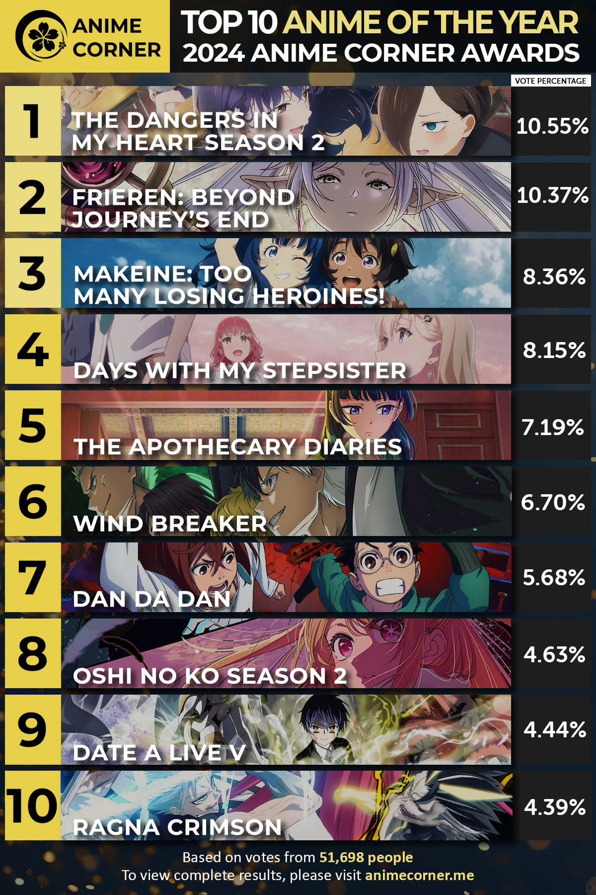
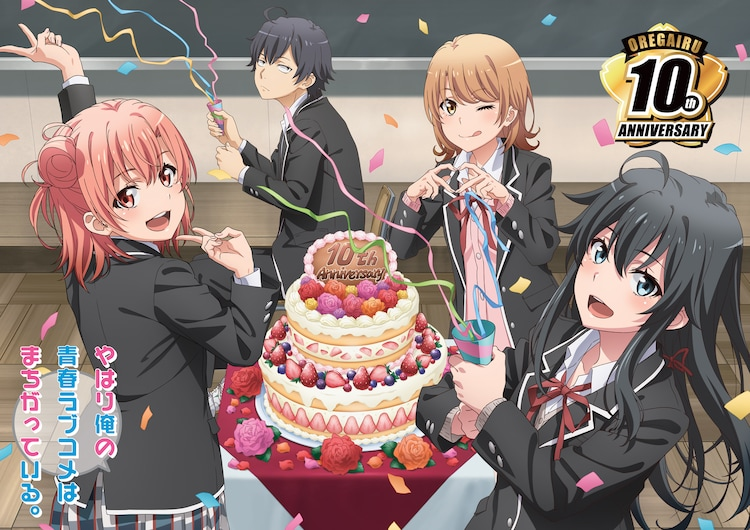
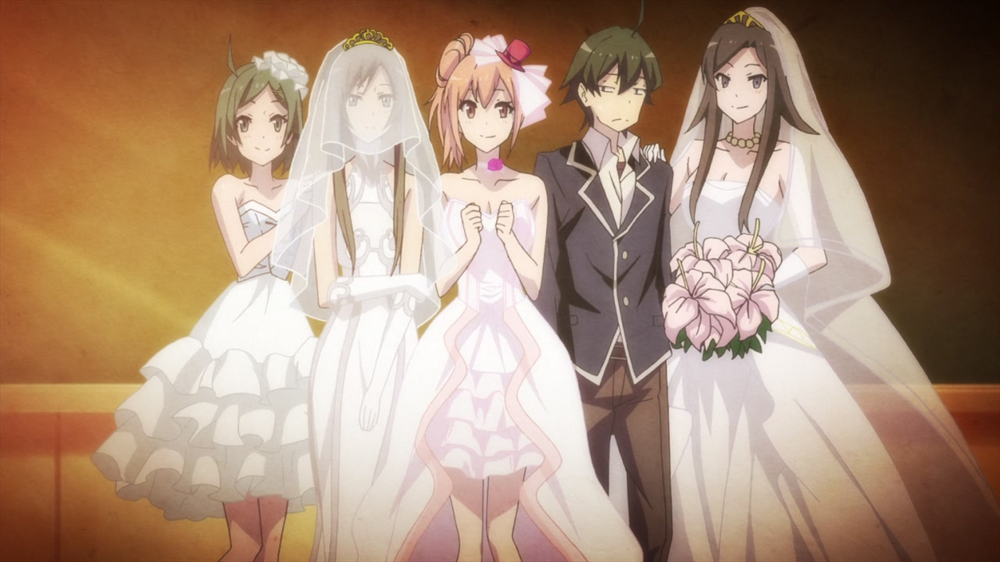

These five anime series stood out to me the most in 2024. Whether it was the story, the art, or the emotional punch, each one made a lasting impact!
The Dangers in My Heart Season 2 – A unique romantic comedy with amazing character growth and heartwarming moments.
Frieren: Beyond Journey’s End – A deep, emotional journey that explores life after adventure with stunning visuals and music.
Makeine: Too Many Losing Heroines! – Hilarious twists on typical rom-com tropes with loveable characters.
Days With My Stepsister – A sweet and touching series exploring blended families and quiet emotional growth.
The Apothecary Diaries – Beautifully animated historical drama with a brilliant female lead and clever mysteries.

🌟 My All-Time Favorite Anime
My Teen Romantic Comedy SNAFU (Oregairu) has been my favorite anime for years. I love how it mixes dry humor, social awkwardness, and emotional depth through the story of Hachiman, Yukino, and Yui. The dialogue is sharp, the relationships are messy and real, and it speaks deeply to anyone who’s ever felt like they didn’t fit in.


Personal pick
Selected based on emotional impact, dialogue, and relatability.
Fan ranking
Based on public vote from Anime Corner with over 50,000 participants.